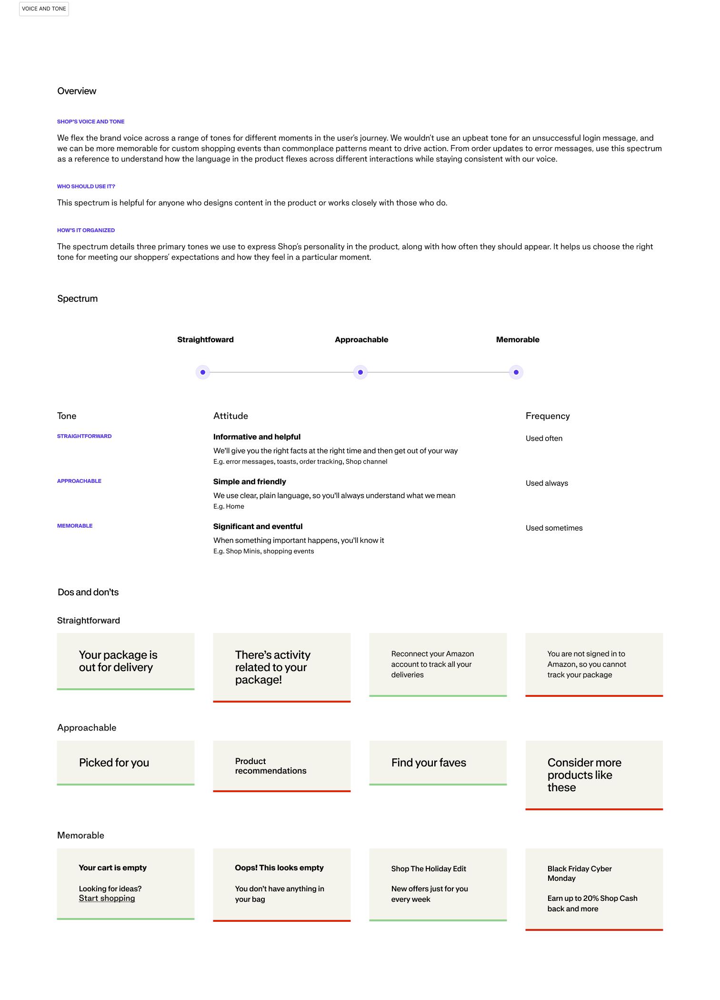
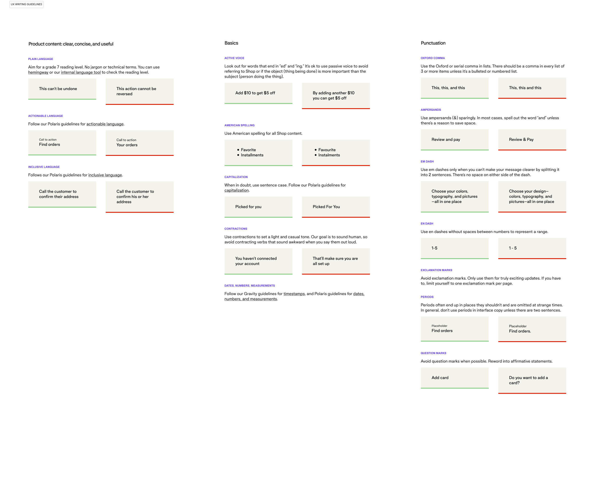
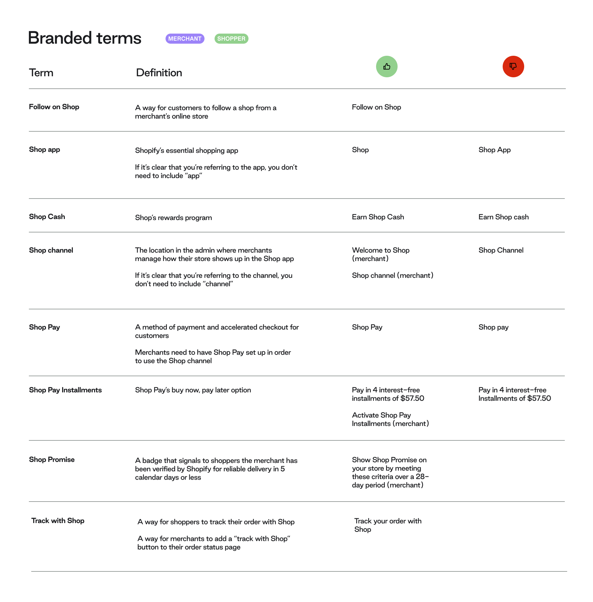
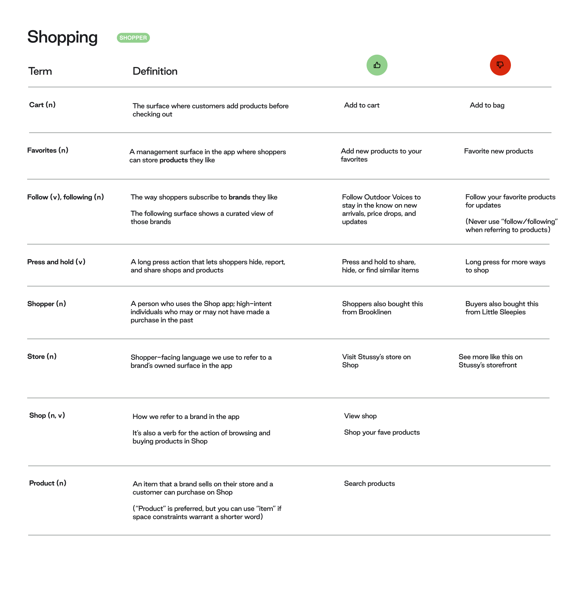
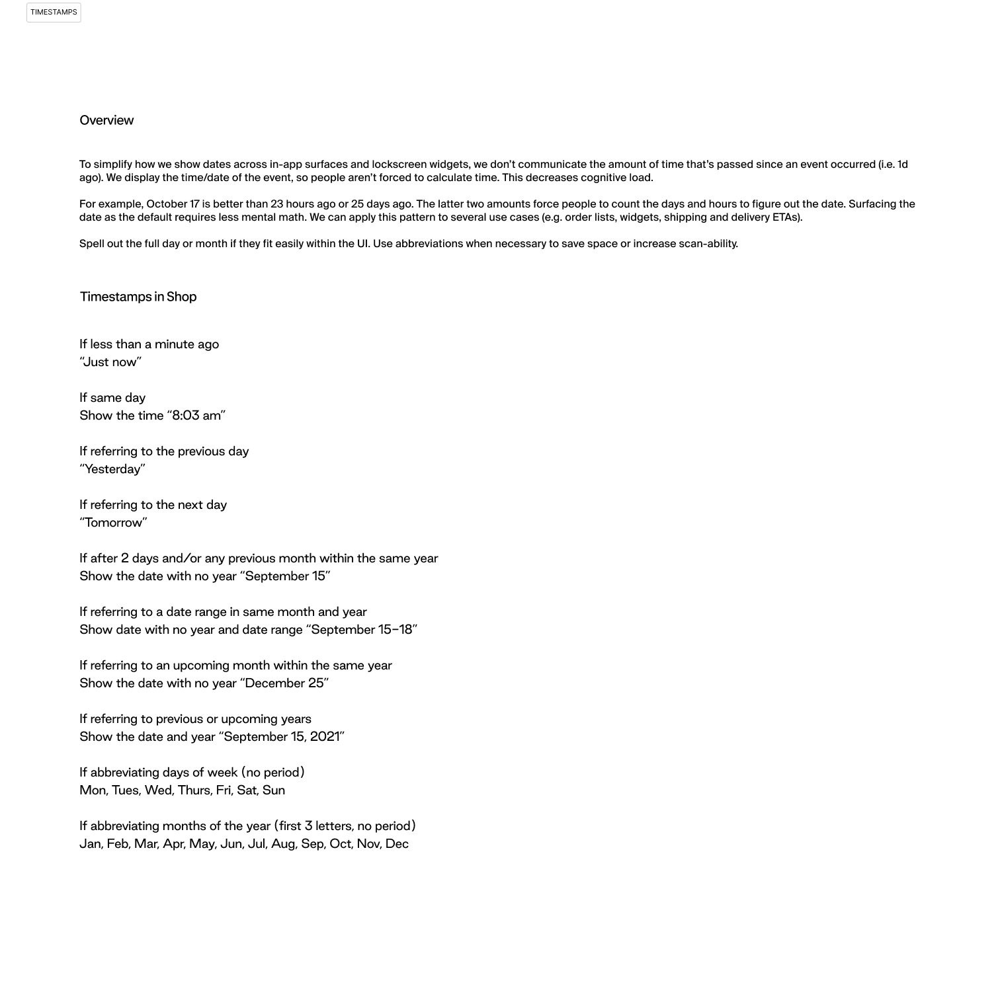

Gravity content system
A voice and tone system that gave Shopify's Shop app one consistent voice across two very different audiences, merchants and shoppers.
The challenge
- The Shop app had no shared, documented voice. Once more than one writer touches a growing surface, tone drifts: order updates, empty states, and error messages all end up sounding different.
- It had to serve two audiences at once. Merchants and shoppers use different words for the same features, and one system had to speak to both without splitting in two.
- It had to extend Polaris, not duplicate it. Shopify's design system already set the foundation, so Gravity was the shopper-facing layer on top, not a rebuild from zero.
- How I knew it was real: the drift was already in the product. The same app greeted you one way, apologized another, and celebrated in a third. No audit needed, it was visible in the strings once you lined them up.
- The goal: one reference any writer could apply on their own, so the Shop app sounded like a single product no matter who was writing, or when.
From here, you'll need a password
The full walkthrough, the screens, and what I learned are behind a password. Reach out and I'll send it over.
That is not it. Try again, or ask me for the password.
What I did
- Built a 3-point tone spectrum: Straightforward, Approachable, Memorable. Each point got a defined attitude, a frequency (used always, used often, used sometimes), and real product moments as anchors: order tracking and error messages sit at Straightforward, Home sits at Approachable, and Shop Minis and shopping events sit at Memorable.

- Paired every rule with a concrete Do and Don't. For example, "Your package is out for delivery" (do) versus "There's activity related to your package!" (don't, wrong tone for a routine update); "Picked for you" (do) versus "Product recommendations" (don't, too generic for the Approachable tone).
- Wrote the granular mechanical guidelines covering active voice, American spelling, capitalization, contractions, and punctuation: Oxford comma, em dash versus en dash, when to avoid exclamation and question marks. The unglamorous layer that keeps hundreds of strings consistent across many writers.

- Defined branded terminology with audience tags. "Shop Cash," "Shop Pay Installments," "Shop Promise," each with a definition and correct and incorrect usage, tagged for whether it is merchant-facing or shopper-facing language.


- Designed content patterns with the rationale written down. The timestamp pattern, for instance, reasons through cognitive load out loud: we don't communicate how much time has passed since an event (1d ago); we display the actual time or date, so people aren't forced to do the math.

- Paired every writing guideline with a matching visual guideline, component by component. This is the part worth foregrounding: Gravity wasn't a writing-only artifact. It was co-developed with visual design, so voice and visual system evolved together rather than in separate documents.
The outcome
- The components got reused, which says more than any adoption number could. Seven months after I moved off the Shop app, a teammate built the Collabs native-app UI kit by repurposing Gravity's components. I stress-tested it myself, rebuilding the existing Collabs web experience inside the kit to prove it could carry a native app.
- That is the real measure of impact here: Gravity's systems thinking became literal infrastructure for a different team's product, not a style doc that shipped once and sat still.
- And the standard it built on is public. Shopify's Polaris still documents the same plain-language, active-voice, 7th-grade-reading-level rules Gravity extended, so the rigor is checkable, not just claimed.
What I learned
- The hardest calls were never mechanical. Punctuation you can just decide. Tone was the tension: a declined payment could read Straightforward ("Your card was declined") or lean Approachable to soften it, and the wrong pick made the app feel either cold or weirdly upbeat about your money not going through. Writing those judgment calls down, with real examples, was the whole point.
- Pairing every writing rule with a visual one changed how I saw voice. I had thought tone lived in the words. Up close with visual design, it clearly lived in the spacing, the hierarchy, the weight of a button too. Guidelines that only covered words were doing half the job.
- Next to the tone-of-voice agent work I did later at Welltech, Gravity reads like an early version of the same instinct: don't hand people, or a model, a list of adjectives and hope. Give them the reasoning behind each call, so they can make the next one without you in the room.
- And I didn't know a teammate would later rebuild a product I never touched on top of Gravity's components. Finding that out changed what I thought I had made: not a style doc for one app, but something durable enough to travel.
There's always more behind a case study.